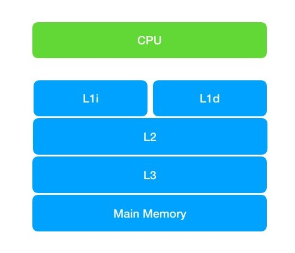
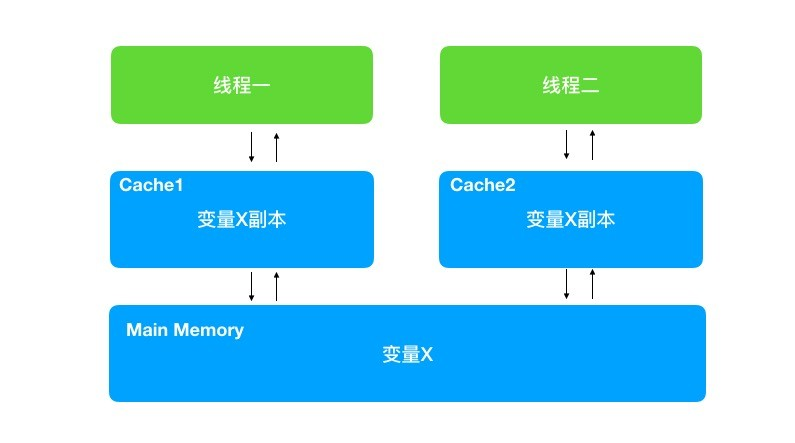

可见性
可见性指的是，某个线程对共享变量进行了修改，其它线程能够立刻看到修改后的最新值。乍一听这个定义，你可能会觉得这不是废话吗？变量被修改了，线程当然能够立刻读取到！否则即使单线程的程序也会出问题啊！没错，变量被修改后，在本线程中确实能够立刻被看到，但并不保证别的线程会立刻看到。原因就是编程领域经典的两大难题之一——缓存一致性。
观察可见性
1 | public class visibility { |
这段代码很简单，ShowVisibility 实现 Runnable 接口，在 run 方法中判断成员变量 flag 值为 true 时进行打印。main 方法中通过 showVisibility 对象启动一个线程。主线程等待 0.5 秒后，改变 showVisibility 中 flag 的值为 true。按正常思路，此时 blindThread 应该开始打印。但是，实际情况并非如此。运行此程序，输出如下：
1 | flag is true, thread should print |
没错，flag 改为 true 后，blindThread 没有任何打印。也就是说 blindThread 并没有观察到到 flag 的值变化。
如果是单线程程序，做了一个变量的修改，那么程序是立即就能看到的。然而在多线程程序中并非如此。原因是 CPU 为提高计算的速度，使用了缓存。
CPU缓存
大家一定都知道摩尔定律。根据定律，CPU 每 18 个月速度将会翻一番。CPU 的计算速度提升了，但是内存的访问速度却没有什么大幅度的提升。这就好比一个脑瓜很聪明程序员，接到需求后很快就想好程序怎么写了。但是他的电脑性能很差，每敲一行代码都要反应好久，导致完成编码的时间依旧很长。所以人再聪明没有用，瓶颈在计算机的速度上。CPU 计算也是同样的道理，瓶颈出现在对内存的访问上。没关系，我们可以使用缓存啊，这已经是路人皆知的手段了。CPU 更狠一点，用了 L1、L2、L3，一共三级缓存。其中 L1 缓存根据用途不同，还分为 L1i 和 L1d 两种缓存。如下图：

缓存的访问速度是主存的几分之一，甚至几十分之一。通过缓存，极大的提高了 CPU 计算速度。CPU 会先从主存中复制数据到缓存，CPU 在计算的时候就可以从缓存读取数据了，在计算完成后再把数据从缓存更新回主存。这样在计算期间，就无须访问主存了，速度大大提升。加上缓存后，CPU 的数据访问如下：

我们再回头看上文的例子。blindThread 线程启动后，就进入 while 循环中，一直进行运算，运算时把 flag 从主存拿到了自己线程中的缓存，此后就会一直从缓存中读取 flag 的值。即便是main线程修改了 flag 的值。但是 blindThread 线程的缓存并未更新，所以取到的还一直是之前的值。导致 blindThread 线程一致也不会有输出。
Volatile作用
要想解决可见性问题其实很简单。第一种方法就是解决一切并发问题的方法–同步。不过读和写都需要同步。
此外还有一个方法会简单很多，使用 volatile 关键字。
我们把例子中下面这行代码做一下修改。
1 | private Boolean flag = false; |
改为：
1 | private volatile Boolean flag = false; |
这样就可以正确输出了。
Volatile的原理前面的文章已经解释过，就不再重复了，它的作用可以总结如下:
- 解决可见性问题
- 解决有序性问题
有关有序性，之前的文章也解释了，这里我们再给出一道面试题来回顾下：
单例模式中，单例对象是否需要加Volatile关键字？
答案是需要的。因为new 一个对象实际上是细分了3个步骤：
- 申请内存
- 初始化内存
- 赋值变量
而一旦发生乱序，并发来的线程就可能拿到一个未被初始化过的单例对象，会发生错误。尽管这种可能性比较低，但问题确实存在的。这也称为“对象逃逸”问题。

...
...
This is copyright.